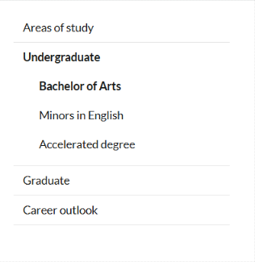
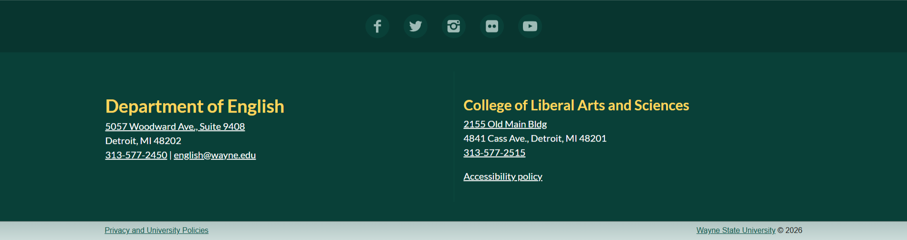
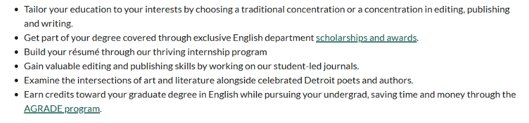
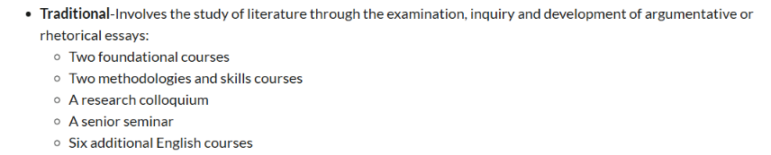
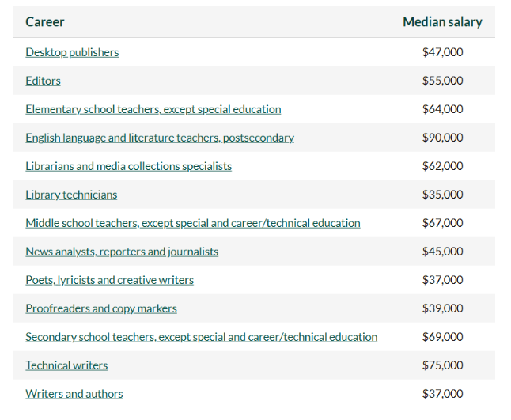
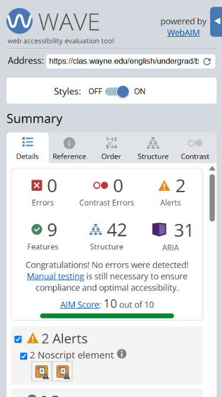
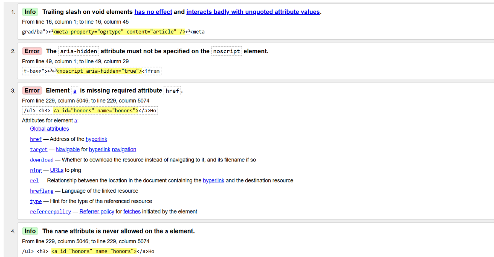

College of Liberal Arts and Sciences BA in English
https://clas.wayne.edu/english/undergrad/ba
This webpage was chosen as it appeared to visually fulfill the minimum criteria for this research project. Upon scrolling through the page, it was evident that there was a clear header and footers, a navigation area, main content, images, lists, and headings based on the webpage’s visual appearance. The Chrome inspector tool also helped to confirm that the website reached the minimum criteria in its HTML design beyond the website’s physical appearance.
Major Sections
Site Header
header
This section of the webpage would use this semantic element as it represents introductory content for the webpage as well as navigational links and information for the overall website.
This section also contains the logo for Wayne State University, the organization that owns the webpage and overall website, as well as authorship information (College of Liberal Arts and Sciences).
Main Navigation

nav
I would use the semantic element nav in order to mark up this section of the webpage as it represents a set of navigation links to other pages on the website.
It also represents a section with links to other content within the page itself. I may also use the aside element to place information to the side of main content.
Primary Content
main
For this section, I would use the main semantic element. This section displays the primary information of the webpage, detailing the program, it's requirements and other details.
I would also use the section element as well to divide information into disctinct sections as described by their headings tag.
Page Footer

footer
This section would use the footer tag as it represents the bottom of the webpage and contains copyright and authorship information.
It also includes other information that is often contained within the footer element, inlcuding contact information and links to the beginning of the webpage as well as back to the website's homepage.
Headings
Bachelor of Arts in English
- Heading level: h1
- This is the primary heading and the title of the webpage, as well as the most important heading.
Why Wayne State's English Major?
- Heading level: h2
- This is the title of a section under the primary page title.
Learning Objectives
- Heading level: h2
- This is the title of a section under the primary page title.
English program requirements and curriculum
- Heading level: h2
- This is the title of a section under the primary page title.
Concentration and courses
- Heading level: h3
- This heading is the title of a sub-section of the webpage.
Honors in English
- Heading level: h3
- This heading is the title of a sub-section of the webpage.
Join a Student Lead Journal
- Heading level: h2
- This is the title of a section under the primary page title.
Earn your M.A. or Ph.D. in English
- Heading level: h2
- This is the title of a section under the primary page title.
Related minors
- Heading level: h2
- This is the title of a section under the primary page title.
English bachelor's degree career outlook
- Heading level: h2
- This is the title of a section under the primary page title.
Career insights
- Heading level: h3
- This heading is the title of a sub-section of the webpage.
Tuition and financial aid
- Heading level: h2
- This is the title of a section under the primary page title.
Learn more about Wayne State University's B.A. in English
- Heading level: h2
- This is the title of a section under the primary page title.
Lists
List 1

This would be an ul because it represents an unordered list where the order of the list is irrelevant. It also uses bullet points to represent information and includes links within two of the list items, or li.
List 2

This list is also an ul as it represents a list where the order of items does not matter. However, this list uses styling and the stronger element to change the visual appearance of the information presented in comparison to the previous list. It only uses plain text.
Links
Internal Links
- https://clas.wayne.edu/english/undergrad/agrade
- https://clas.wayne.edu/english/students/scholarships
External Links
- https://www.onetonline.org/link/summary/43-9031.00
- https://www.onetonline.org/link/summary/27-3042.00
For external links, each link opens in a new tab and uses the (target="_blank") attribute. This makes sense and is expected as a user as the webpage functions as a directory of information about the program and a user would want to refer back to their original source.
However, there is very little indication that this is an external link on the page without hovering a mouse over the link.
Tables

This table represents various career pathways for a B.A. in English and each career's potential salaries. It uses th header cells to label two columns: Career and Median Salary.
This table structure makes sense for the content as it presents each career in connection with its' salary, making it easy to connect information within the table.
Accessibility

The WAVE report of this webpage reported no errors, but it did report 2 alerts. Both alerts are related to a noscript element being present which can present difficulties for users who have JavaScript enabled.
Other than the errors mentioned, there were no other significant accessibility issues found based on the WAVE report. Descriptive alt text was also found on all images on the website.
Overall, there were no significant errors according to the WAVE report on this webpage.
Validation

The W3C HTML Validator reported 4 errors and 2 warnings.
One of the errors presented includes an a element that is missing a href attribute, meaning that an intended link can not be used on the webpage. By missing the attribute, a link is not functional for users.
In order to resolve these errors, the site owner could review each intended link to ensure that all necessary elements and attributes are present. Other errors could be resolved by reviewing code and ensuring all start and end tags are written correctly.
Summary
Overall, I would say that this webpage was well-strutured and accessible for a variety of users. While the webpage presented some minor issues, such as a few incomplete tags, the website is easy to navigate and information is clearly organized both visually and semantically.
The presence of a some incomplete tags present the most significant structural issues and the presence of noscript elements can present some barriers for accessibility. However, these are errors that can be easily resolved with minimal edits to the overall HTML structure.
One improvement I would reccomend would be to add more internal links to content or subject headings within the webpage using the Main Navigation section. The webpage is quite long and providing more links to internal content would make it easier for a user to quickly access relevant information about the program.